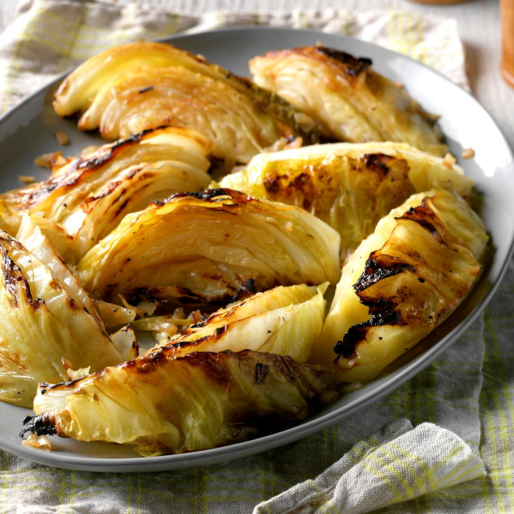

Back
Roasted Cabbage

Description
This honestly is the best way to make cabbage as it is buttery, moist, and just melts in your mouth. Plus it is super easy
to make - just season and stick it in the oven.
Ingredients
- 1 head cabbage
- 1/3 cup butter
- 1/2 teaspoon garlic salt
- 1/4 teaspoon pepper
Steps
- Cut cabbage into eight wedges
- Spread cut sides with butter
- Season with garlic salt and pepper on each side
- Wrap aluminum foil around each wedge and seal tightly
- Bake at 450 degrees for 28 minutes